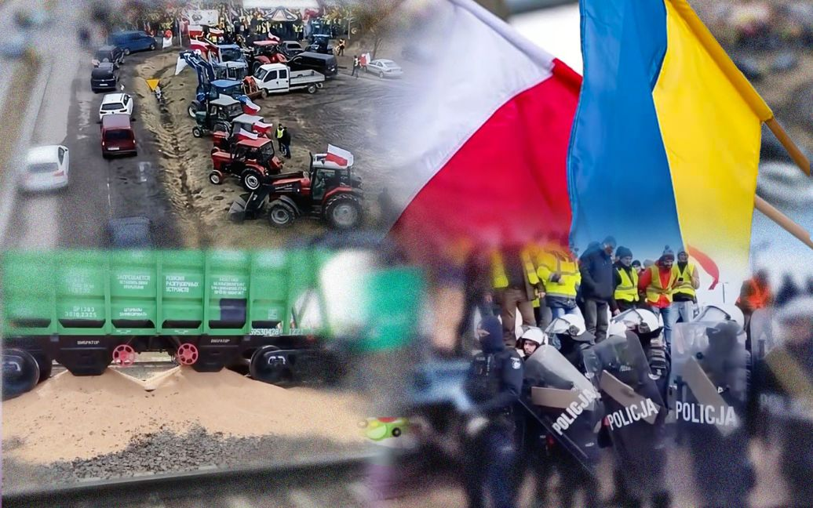

Self
Anger

Polland: blockade of the border
UNIAN
5 Min Read
Complete blockade of the border: the Poles spilled the grain, they do not allow the help of the Armed Forces, the Ukrainians act in response
See MorePolitics
Possible 20 Million Ukrainians Will Migrate if Putin Wins In Ukraine
By andy J. Semotiuk
5 Min Read
This week marks the second anniversary of Russia’s invasion of Ukraine. Since February 24th, 2022, over six million Ukrainians have fled their country and over 270,000 of them have legally migrated to America.
See MoreControl

Putin says Russia will push further into Ukraine after 'chaotic' fall of Avdiivka
By Guy Faulconbridge
5 Min Read
President Vladimir Putin said on Tuesday that Russian troops would push further into Ukraine to build on their success on the battlefield after the fall of the town of Avdiivka where he said Ukrainian troops had been forced to flee in chaos.
See More
My Thoughts
1
20.02.2024
I created this page
Starting from December 19, 2023, I studied HTML and CSS
technologies and this is what I got
2
20.02.2024
Tomorrow has not yet come
The whole world is going upside down. Poland unexpectedly stuck a
knife in our back. No one makes any decisions. Opponents cross the red line.
3
20.02.2024
first experience at the dentist
To live to be 32 years old and not be at the dentist is an
achievement. But the experience of the first pain is a vivid experience